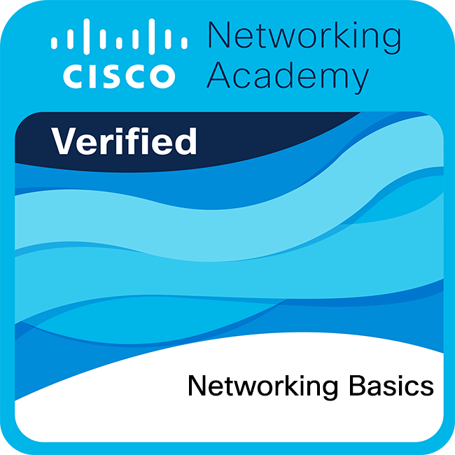

Cybersecurity Journey
Evidencia académica, habilidades técnicas y crecimiento profesional desarrollado durante mi proceso de formación en ciberseguridad.
Conceptos Básicos de Redes
Comunicación entre dispositivos, protocolos y conectividad.
Reseña
En esta certificación se estudiaron conceptos relacionados con direccionamiento IP, protocolos de comunicación y arquitectura básica de redes.
Además, permitió comprender cómo funcionan las infraestructuras de red dentro de organizaciones modernas.

Dispositivos de Red y Configuración Inicial
Configuración de routers, switches y dispositivos empresariales.
Reseña
Esta certificación permitió realizar configuraciones básicas de dispositivos de red y comprender su funcionamiento dentro de infraestructuras empresariales.
También se fortalecieron habilidades relacionadas con resolución de problemas y administración inicial de redes.
Seguridad en Terminales
Protección de endpoints y mitigación de amenazas.
Reseña
Durante esta certificación se analizaron amenazas comunes como ransomware, malware y phishing, además de medidas de protección para estaciones de trabajo.
El contenido fortaleció conocimientos relacionados con hardening, monitoreo y actualización segura de sistemas.

Administración de Amenazas Cibernéticas
Identificación, análisis y mitigación de amenazas digitales.
Reseña
Esta certificación permitió comprender metodologías utilizadas para la detección y gestión de amenazas dentro de organizaciones.
También ayudó a desarrollar habilidades relacionadas con análisis de riesgos y respuesta ante incidentes.
Carrera Profesional de Analista Junior
Monitoreo SOC, análisis de eventos y respuesta a incidentes.
Reseña
Esta certificación integró conocimientos orientados al trabajo dentro de centros de operaciones de seguridad (SOC).
Además, permitió comprender procesos de monitoreo continuo, documentación y análisis de incidentes de seguridad.
Hacker Ético
Pentesting y evaluación ofensiva de vulnerabilidades.
Reseña
Esta certificación se enfocó en técnicas utilizadas para identificar vulnerabilidades y evaluar la seguridad de sistemas.
También permitió comprender metodologías de pentesting y la importancia de implementar controles preventivos.